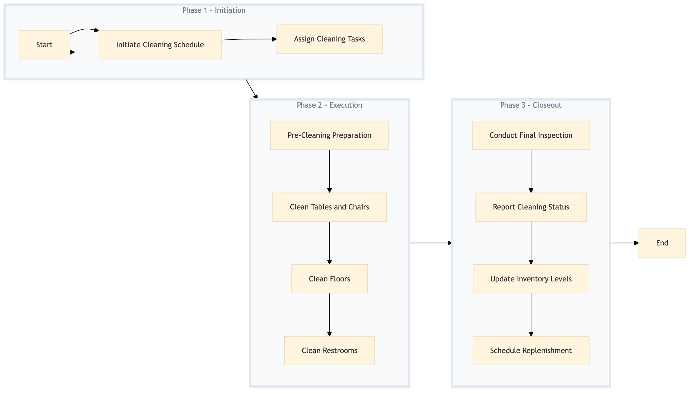

| Role | Steps |
|---|---|
| Executive Housekeeper | 1.1 3.1 3.2 |
| Housekeeping Supervisor | 1.2 3.3 3.4 |
| Housekeeper | 2.1 2.2 2.3 2.4 |
| Step | Name | Role | System | Input | Output | KPI | Dec? | Exc? | Pain Point / Risk |
|---|---|---|---|---|---|---|---|---|---|
| 1.1 | Initiate Cleaning Schedule | Executive Housekeeper | Oracle OPERA Cloud | Daily end-of-shift report | Cleaning schedule for the next day | Less than 5 minutes | N | Y | Inaccurate reporting from housekeeping staff leading to missed cleaning tasks. |
| 1.2 | Assign Cleaning Tasks | Housekeeping Supervisor | Oracle OPERA Cloud | Cleaning schedule | Task assignments for each cleaner | Less than 3 minutes | N | Y | Overloading cleaners with tasks, leading to rushed and incomplete work. |
| 2.1 | Pre-Cleaning Preparation | Housekeeper | Oracle OPERA Cloud | Task assignments | Gathered cleaning supplies | Less than 5 minutes | N | Y | Insufficient stock of cleaning supplies. |
| 2.2 | Clean Tables and Chairs | Housekeeper | Oracle OPERA Cloud | Gathered cleaning supplies | Clean tables and chairs | Less than 10 minutes per table set | N | Y | Difficult-to-reach areas or heavy furniture. |
| 2.3 | Clean Floors | Housekeeper | Oracle OPERA Cloud | Gathered cleaning supplies | Clean floors | Less than 15 minutes per floor area | N | Y | High traffic areas with heavy foot traffic. |
| 2.4 | Clean Restrooms | Housekeeper | Oracle OPERA Cloud | Gathered cleaning supplies | Clean restrooms | Less than 10 minutes per restroom | N | Y | Restrooms with high usage leading to rapid dirt accumulation. |
| 3.1 | Conduct Final Inspection | Executive Housekeeper | Oracle OPERA Cloud | Cleaned areas | Inspection report | Less than 5 minutes | Y | N | Missed cleaning spots or inadequate cleaning. |
| 3.2 | Report Cleaning Status | Executive Housekeeper | Oracle OPERA Cloud | Inspection report | Cleaning status report | Less than 3 minutes | N | Y | Delayed reporting leading to operational disruptions. |
| 3.3 | Update Inventory Levels | Housekeeping Supervisor | Oracle OPERA Cloud | Consumed cleaning supplies | Updated inventory levels | Less than 5 minutes | N | Y | Overlooking low stock levels leading to supply shortages. |
| 3.4 | Schedule Replenishment | Housekeeping Supervisor | Oracle OPERA Cloud | Updated inventory levels | Replenishment order | Less than 10 minutes | Y | N | Delayed replenishment leading to stockouts. |
This process outlines the cleaning procedures for the restaurant and banquet hall at a full-service Marriott hotel. It ensures that all areas are thoroughly cleaned and sanitized to maintain high standards of hygiene and guest satisfaction.